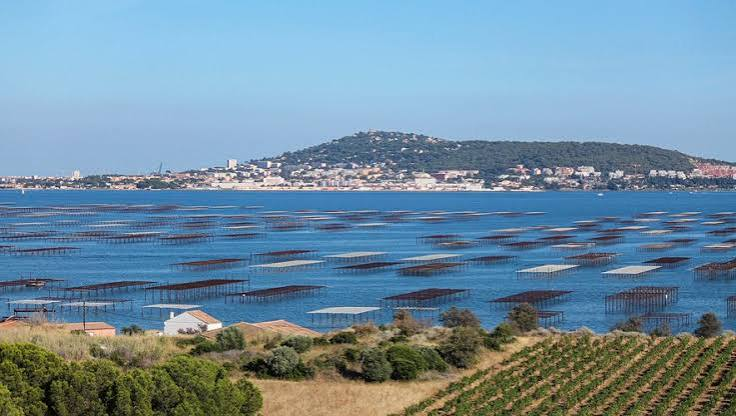

Huîtres & Moules
de Bouzigues


⟹ Trésors de la Lagune ⟸
L'histoire des huîtres et moules de Bouzigues remonte à l'Antiquité : les riverains de la lagune de Thau pêchaient déjà huîtres plates, palourdes et moules, et les fouilles de la villa gallo-romaine de Loupian confirment que ces coquillages étaient consommés — et même exportés vers Rome — dès cette époque.

La véritable conchyliculture, elle, est beaucoup plus récente. En l'absence de marées sur la lagune, les premiers producteurs installés dès 1875 dans les canaux de Sète durent tout réinventer. C'est en 1925 qu'un maçon du village, Louis Tudesq, met au point la technique fondatrice : coller les jeunes huîtres sur des cordes suspendues à des tables immergées en permanence dans l'étang — un mode d'élevage en suspension unique en Méditerranée, toujours utilisé aujourd'hui.
Cette immersion continue, pendant douze à dix-huit mois, associée à la salinité particulière de l'étang, mi-marine mi-lagunaire, donne aux huîtres de Bouzigues une chair charnue et iodée, aux notes de noisette, et aux moules une couleur orangée et une texture ferme très recherchée. Aujourd'hui, environ 600 établissements conchylicoles se répartissent sur les rives de la lagune et produisent chaque année plus de 12 000 tonnes de coquillages.
Seul site de l'Hérault et l'un des rares en France à être classé « site remarquable du goût », Bouzigues a donné son nom à l'une des huîtres les plus réputées de la Méditerranée, indissociable d'un verre de Picpoul de Pinet dégusté les pieds dans l'eau.
Moules farcies sétoises : décoquillées puis mélangées à de la chair à saucisse et des herbes avant d'être regarnies et mijotées dans une sauce tomate.
Huîtres chaudes gratinées : légèrement pochées puis nappées d'une sauce au beurre blanc et gratinées quelques instants au four.
Huîtres spéciales Tarbouriech : élevées à Marseillan selon une méthode inspirée des marées artificielles, reconnaissables à leur chair ronde et sucrée.
Les huîtres et moules de Bouzigues se dégustent au plus près de leur lieu d'élevage, sur les rives mêmes de la lagune de Thau.
Bouzigues village éponyme, où les mas conchylicoles ouvrent leurs terrasses face aux tables ostréicoles et où le musée de l'Étang de Thau retrace l'histoire de ce savoir-faire séculaire.
Mèze premier port conchylicole du bassin de Thau et de toute la Méditerranée, avec ses halles animées et ses producteurs en vente directe.
Marseillan entre parcs à huîtres et Canal du Midi, où plusieurs domaines conchylicoles proposent visites et dégustations au bord de l'eau.
Sète ville portuaire toute proche, dont les halles et les tables réputées mettent à l'honneur coquillages et brasucades toute l'année.